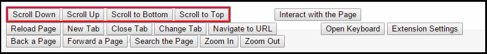
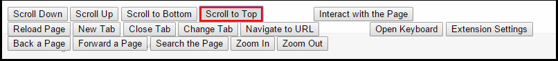
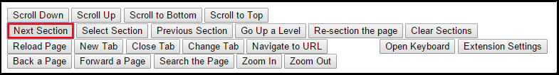
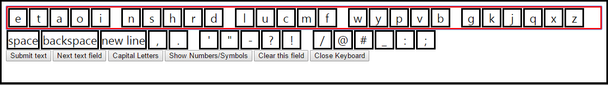

Chrome Switch Access is a browser extension that enables web navigation by adding a switch-accessible "control panel" to each page. These controls provide abilities like scrolling the page, selecting links and buttons, creating and closing tabs, and typing into the page with a virtual keyboard. Most importantly, Chrome Switch Access is free to download and can be used on any device with the Chrome browser.
Right now the project is in beta testing before being submitted to the Chrome web store. If you'd like to help, follow the steps below to install the extension and send us your feedback.
How to Install
Instead of using the Chrome web store, you can install the extension by downloading the source files and uploading them to the Chrome browser.
- Go to https://github.com/aila293/switch-extension
- Click the "Download ZIP" button at the bottom of the right sidebar. This will download the zipped folder "switch-extension-master".
- Unzip the "switch-extension-master" folder.
- Visit "chrome://extensions" in your Chrome browser.
- Check the "Developer mode" checkbox in the top right, above the list of extensions.
- Click the "Load unpacked extension..." button that appears near the top of the page. A file-selection popup will appear.
- Select the unzipped "switch-extension-master" folder. If there are two folders called "switch-extension-master", one inside the other, select the inner "switch-extension-master" folder.
- You should now see "Chrome Switch Access" in your list of extensions. Uncheck the "Developer mode" checkbox. Stay on "chrome://extensions to configure the settings.
How to Use It
Settings
On chrome://extensions, click the "Options" link (between "Details" and "Reload(Ctrl+R)") under Chrome Switch Access. A popup with settings should appear. Later, the settings can be accessed through the "Extension Settings" control on the control panel.- Auto-Scan and Scan Rate: turn Auto-Scan on for one-switch scanning. Activate the switch to start the autoscan, and select an item to stop the autoscan. The light blue border that marks the current item/group will turn red when the autoscan has started. The scan rate is the number of seconds that each option will be active, adjustable in half-second increments.
- Switch Interface Inputs: tell the extension which keyboard keys your switch interface is set to. Selecting the "Set" button will open a small popup window. Activate the switch (or type the appropriate keyboard key) at any time to send the input.
- "New Tab" Page: sets the page that new tabs will be opened on (when using the "New Tab" control in the control panel, not the browser). Chrome's default "New Tab" page is not recommended because the abilities of extensions are restricted on that page.
You may have to refresh the page for new settings to take effect.
Control Panel
The control panel has 5 groups: scrolling, page interaction, tab controls, keyboard and settings, and other page/window controls. The panel opens in "group mode", with the first group (scrolling) active.  In group mode, the extension will scan through each group in order, with the currently active group highlighted in red. Selecting a group will activate the first control in that group, changing to "item mode". In item mode, the panel will scan through the controls in one group. After the last control in a group (e.g. "Scroll to Top"), it'll return to group mode and activate the group it's in (e.g. scrolling).  After selecting any control, the panel will stay in item mode, activating the first control in the same group as the selected one.
Page Interaction
The page interaction controls allow for clicking links, buttons, and input fields in the page by navigating a hierarchy of levels. First, select the "Interact with the Page" control to open a new set of controls.

"Interact with the Page" will also divide the page into different sections, each bordered with purple. The purple sections together are the active level. The active section in the level will be bordered with pink, and a preview of the active section's sub-sections will each be bordered in green.
- Go Up a Level: undo a "Select Section"
- Re-section the page: redraw the sections to include new content that's appeared on the page
- Clear Sections: remove all the section lines and close this set of controls
Keyboard
The extension's virtual keyboard opens after selecting a text field or using the "Open Keyboard" control in the control panel.  The scanning order is similar to the control panel's, with three main groups (letters, other characters, and keyboard controls) and sub-groups of 5 letters or characters. Selecting a key will type it to the active text field (highlighted in orange). If the keyboard is opened from the "Open Keyboard" control, the first text field on the page becomes the active text field.
- Submit text: automatically submits the text field to the site
- Next text field: marks the next text field on the page as the active text field
- Capital Letters: shifts the letters to uppercase
- Show Numbers/Symbols: opens a set of keys that includes numbers and other symbols
- Clear this field: deletes the text in the active text field
- Close Keyboard: closes the keyboard and returns to the control panel. Does not change the active text field or remove any text in it
Other Controls
- Change Tab: opens a popup showing all the open tabs in the window. The tab highlighted in dark blue is the tab that is already active. Select a tab to switch to it.
- Navigate to URL: opens a popup for entering text. Type in a full URL and hit "Submit" to navigate to that page. This feature is currently not very reliable.
- Back/Forward a Page: navigates one page backward or forward in the window's history
- Search the Page: opens a popup for entering text. Hitting "Search" will highlight the next instance of that text in the page. Hit "Exit Search" to close the popup.
Known Issues
- The page-interaction controls depends on the structure of the website you're on, so they might behave unexpectedly on certain sites.
- Sub-sections (green) might be outside the borders of the section (purple/pink) they belong to.
- The active section (pink) might be a part of the page that isn't visible. Hit "Next Section" to move past it.
- If the section is visible, the colored border might be missing or broken.
- Email sites usually don't section correctly.
- It does not work if more than one Chrome window is open.
- It does not work with popup windows.
Contact Us
Email me at liuk@cs.unc.edu with any questions or feedback. Suggestions about the extension's organization, appearance, features, or problems you encountered while using it are all appreciated. If you report a problem, please be as specific as possible with the sequence of events and what you saw.